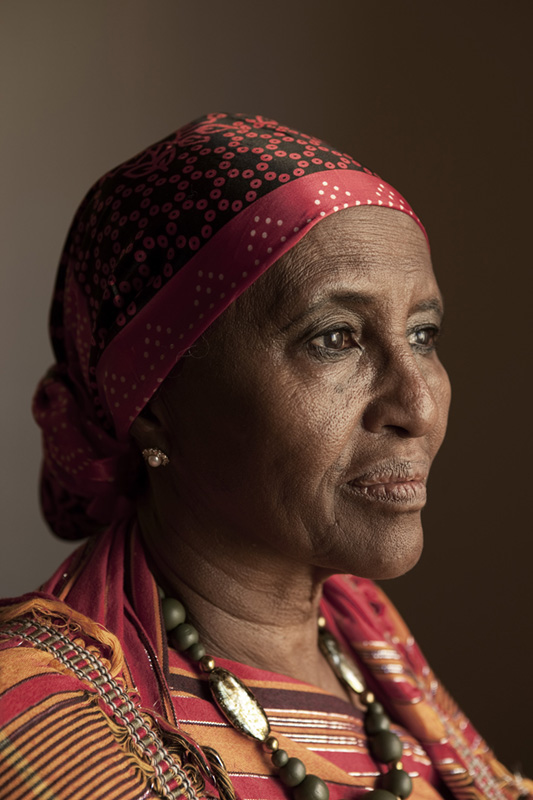

Dr. Hawa
Dr. Hawa Abdi
Dr Hawa Abdi Diblaawe was born in 1947 in Mogadishu. Her father was a worker in the city’s port and her mother died when she was very young. As the eldest child, Hawa was forced to raise her four sisters in conditions of poverty. But she never lost hope sight of her dreams.
“My father was an educated man,” she recalls, “He made sure I had the chance to become a doctor.”
With the help of a Soviet scholarship, Hawa studied medicine in Kiev and soon became Somalia’s first female gynecologist. She then completed a Law degree at the Somali National University in Mogadishu, where she later became an Assistant Professor of Medicine. She soon opened a clinic on her family’s ancestral land in the Afgooye Corridor, using the profits from her family land to provide free health care to all of her countrymen.
When the civil war began in 1991, Dr. Hawa started housing her employees on her land, feeding them and caring for them. Soon their friends and relatives came seeking shelter, then after the friends and relatives of their friends and relatives. Dr. Hawa welcome them all, providing shelter to all those who came regardless of where they came from. In 2012, Dr. Hawa’s land housed more than 90,000 refugees, most of whom are women and children.
Today, Dr. Hawa Abdi continues to fighter for the women, children and elderly people of the Hawa Abdi Village. With the help of her two amazing daughters, Deqo and Amina, both of whom are doctors who have followed in her footsteps, Dr. Hawa continues to keep a candle of light lit for the people of the Afgooye Corridor.
Dr. Hawa has won numerous distinctions and awards, including the John Jay Justice Award, Vital Voices’ Women of the Year Award and a nomination for the Noble Peace Prize in 2012. U.S Secretary of State Hillary Clinton has called Dr Abdi “a perfect example of the kind of woman who inspires me”.
The Hawa Abdi Village
The Hawa Abdi Village has developed over the last twenty nine years as individuals have come to Doctor Hawa’s land in search of relief and shelter. There were 90,000 residents living in the Hawa Abdi Village in 2012, mainly consisting of women, children and the elderly.
The Hawa Abdi Village’s well boasts the only source of free fresh water in the region, and we are developing a ‘smart farming’ agriculture program aims to give Somalia a defense against famine and climate change. Our hospital boasts 400 beds and provides vaccinations, along with maternal and pediatric care, to everyone who comes to our doors. The Waqaf-Dhiblawe Primary School meanwhile seeks to lay the foundation for a new future by educating a new generation of Somali leaders.
What began as a simple camp for Internally Displaced Persons has developed into a vibrant community. Dr. Hawa is extremely pleased to have given so many Somalis a place to stay and hopes to see the Hawa Abdi Village continue to prosper.
Mama Hawa's Memoir: Keeping Hope Alive

The moving memoir, Keeping Hope Alive: One Woman--90,000 Lives Changed, chronicles Dr. Hawa and her daughters' inspiring work to keep 90,000 of her fellow citizens safe, healthy, and educated for over 20 years in Somalia.
Click here and order your copy today!
Donate
Your generosity can help save lives.